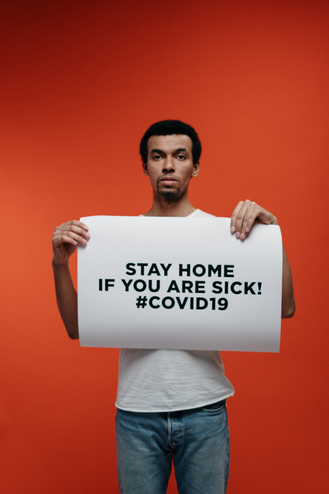

David's help
About Us
Mission
Our mission is to serve individuals at risk for COVID-19 and food insecurity, using technology to empower community organizations and local volunteers to deliver the essential supplies to those in need.
How we help

Lemme Help connects those who must shelter in place with our volunteers and delivery partners so groceries,
medication and essential supplies get delivered safely. Our technology platform makes community
volunteerism easy and reliable while providing an intuitive solution for partners to scale their own impact.
Our partner solutions allow organizations to fulfill custom and batch requests at scale through the
Lemme Help platform, while we connect individuals who need help and can offer help through our website.
Our partnerships with organizations like Wider Circle, Optum, Second Harvest, Uber and others have
allowed us to help bridge volunteer shortages and solve the challenge of last mile delivery at scale.
We've grown the number of people we can help by working together—and we are always open to new partners
who want to contribute to our mission.
Join our team
Founded by veterans of Uber, Facebook, and Google, as well as students beginning their careers,
the Lemme Help organization comprises more than 150 volunteers around the country who want to give back.
Together, we make local volunteerism easy and reliable for our partners and help to slow the national
spread of COVID-19.
If you are passionate about making a difference in people’s lives, we’d love to have you join our team
of dedicated volunteers!